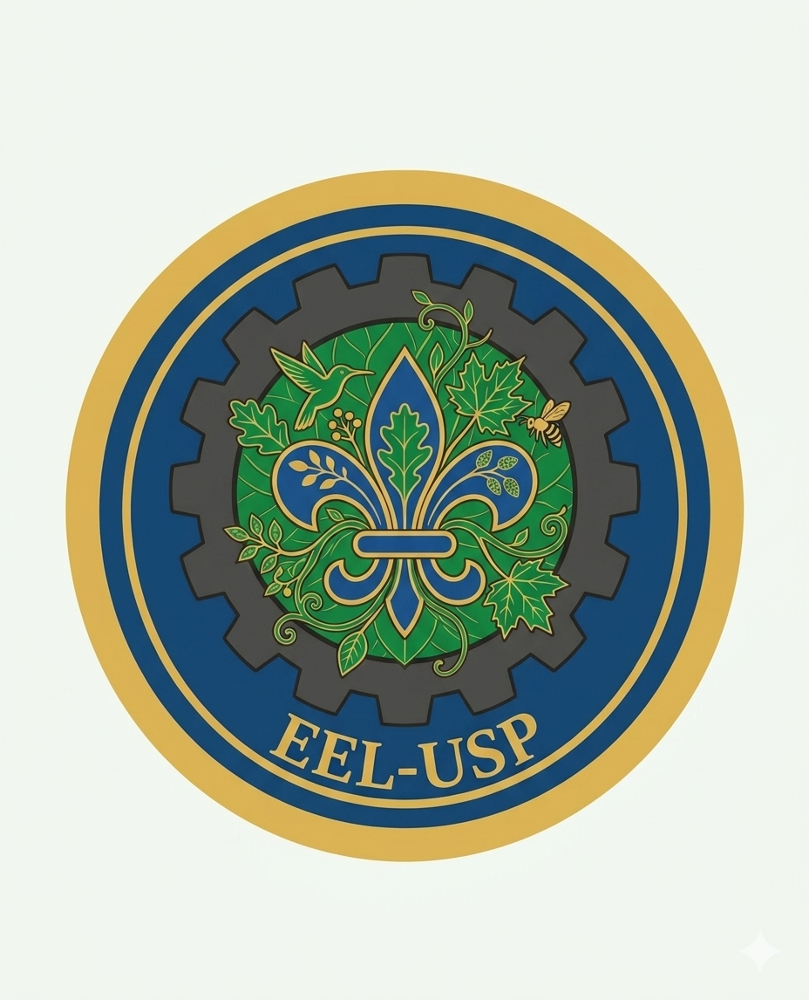

Projeto desenvolvido por estudantes da Escola de Engenharia de Lorena para a disciplina de Tecnologias Limpas.

Utilizar tecnologia e inovação sustentável para promover conscientização ambiental e melhorar a qualidade de vida.
Reduzir impactos ambientais.
Soluções de baixo custo.
Foco em residências vulneráveis.
Substitua os nomes e e-mails pelos dados reais.
abcalou@usp.br
eduardabd.eng@usp.br
phbbpedrobueno@usp.br
larissa.katsumata@usp.br
Pedrovance@usp.br
bruno.zwilhelms@usp.br
karinaIanes@usp.br